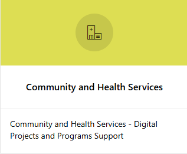

Work Portfolio

Power BI Service Desk Analytics Dashboard
Analyzed historical Jira service desk data spanning multiple years and built an interactive Power BI dashboard.
What I Did
Cleaned ticket data, designed data models, developed DAX measures, created visualizations, and analyzed trends in incident volumes across years, quarters, and locations.
Result
Produced actionable insights that supported future service demand forecasting and resource planning discussions.
Reflection
This project strengthened my analytical thinking and showed me how visual storytelling can transform raw data into strategic business insights.
Competencies: Critical Thinking, Communication, Problem Solving

Knowledge Base Migration Automation
Developed Microsoft Power Automate workflows to assist with migration activities and document management.
What I Did
Designed automated workflows, tested business rules, monitored execution results, and documented procedures.
Result
Reduced manual effort and improved consistency throughout the migration process.
Reflection
I gained valuable experience in process optimization and learned how automation can significantly improve workplace efficiency.
Competencies: Innovation, Systems Thinking, Problem Solving

2026 Annual Project Report
Assisted in preparing a year-end report summarizing departmental project achievements and milestones.
What I Did
Gathered project information, analyzed progress metrics, summarized accomplishments, and organized content for executive review.
Result
Delivered a professional report that communicated progress, project outcomes, and organizational impact.
Reflection
This work strengthened my ability to communicate technical information in a concise and professional format.
Competencies: Communication, Professionalism, Leadership